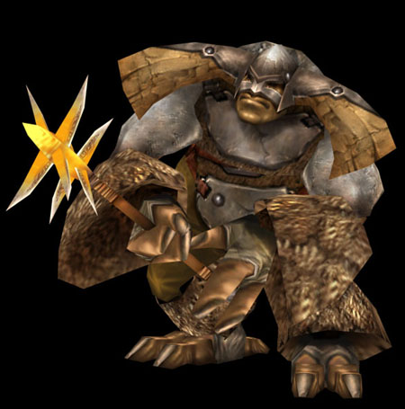
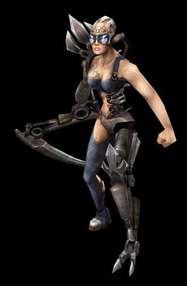

KuDer

ЭВМ - Эфирная Вычислительная Машина
Хаот и синтет ехали по пустыне. Воин Хаоса вальяжно расположился на панцире своего "средства передвижения" непонятной породы, а Синтет сидел на своем механическом "крабоскорпионе", пребывая, как могло показаться обывателю, в состоянии глубочайшей задумчивости и изредка оглядываясь. Но хаот (которого, кстати, звали Грифлиф) знал, что его спутник, воин Синтеза с маркировкой Epsilon 700F - "Упаковщик" отлаживает логический модуль и оптимизирует данные, поступающие извне. Какие такие данные, Грифлиф не знал, равно как и что такое логический модуль, и где же он находится. Да и не интересовало его это. В его голове копошились самые обыкновенные живые мысли, глупые и отчасти мудрые, абсолютно бесполезные и местами ценные.
